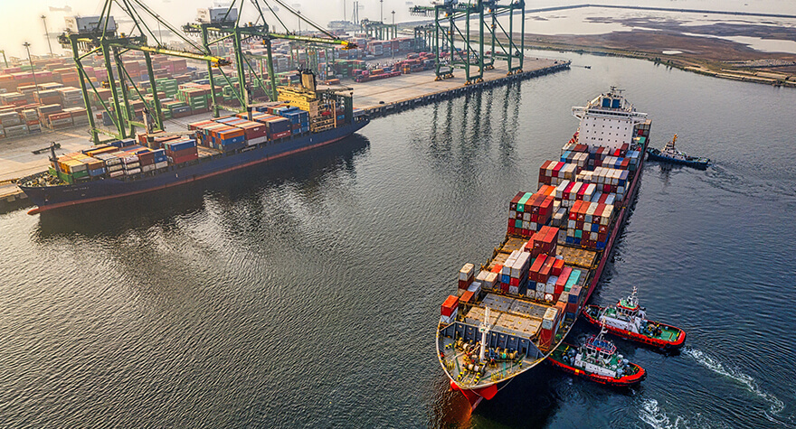

PORT TO PORT
Global movement, carefully connected.
Ocean freight can be a strong fit for many shipping needs. We help align your cargo, route and timing, then coordinate the handoffs so your team can plan with more confidence.
- International ocean freight planning
- Coordination around shipment requirements
- Clear communication through key handoffs
